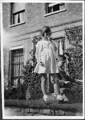
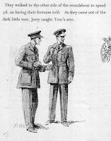
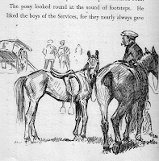

{kind=link}

“On October 6th, very suddenly, Beedings, Tunbridge Wells, Daphne, dearly loved younger daughter of Francis and Hazel Winstone-Scott. No letters please.” (Sevenoaks Chronicle & Kentish Advertiser 12.10.1945).
Daphne was my mother’s younger sister. She had gone up to her bedroom,
that Saturday evening, and shot herself with their father’s WW1 revolver. It was
1945 and she was just fifteen.
I learn now, from checking old newspapers, (oh,
the magic of the internet!) that Daphne had suffered periods of illness from
the age of six and had spent eighteen months in bed when she was twelve. I remember that one of my aunts had told me long ago that Daphne had suffered
from kidney disease and committed suicide because she realised she
was going to die anyway. In fact dialysis was already entering the development stage by 1945 -- but Daphne didn't know that. A Daily Mirror report dubbed her “the girl who would never grow up.” (8.10.1945)
At the inquest, which was held in the family home, Daphne’s doctor, who
had seen her the day before, agreed that her illness would have
shortened her life eventually but said there was nothing otherwise out of the ordinary at that time. When he had seen her she had been in good spirits and looking
forward to a holiday. “Active and lively, she was a normal
child with more than normal intelligence.”
As far as the doctor knew “she was not aware that she had a chronic
disease nor did it strike him that she was worrying about her health.” (Kent & Sussex Courier 12.10.1945). Her
father, however, who also gave evidence, said that although he had no reason to
think that Daphne was aware of the serious nature of her illness “being an exceptionally
intelligent child she might possibly have guessed the truth.” (He, by then, must have read the note she left)
{kind=link}
But what truth? Was she going to die next week? Next year? Sometime? She’d not gone away to school
like her older siblings but had stayed at home focussing much of her attention
on her pony, who she drove when she couldn’t ride. The Daily Mirror article claimed she’d told someone she was worried
because she couldn’t exercise her pony properly. Most of the checkable details
in that article are wrong and the sources are anonymous – but not being able to exercise a pony properly is the sort of anxiety that could so easily prey on a young girl’s mind when she knew she was seriously ill but no one was talking to her about it.
Outwardly Saturday October 6th 1945 had been a normal day. Daphne
and her parents had been to a Victory Fete in aid of a maternity home part-funded
by her father. Then there’d been supper with older sister June (my mother) down from London for the
weekend and older brother Rivers home on leave but out playing bridge with
neighbours. After supper Daphne went upstairs, locked her bedroom door and
shot herself. A note was later found “in the child’s handwriting”.
According to the newspaper report of the inquest the family downstairs
(my mother and her parents) heard a “crash”, went up, found the door locked,
got no answer from inside and called the police. Detective Sergeant Curling
“effected entrance” through the window and discovered that Daphne had fired two
shots, one to blow out the middle pane in the window and the other in her own
forehead. The coroner came to the decision "that she took her own life
while the balance of her mind was disturbed but he wished to make it clear that
there was no question of insanity." The doctor too was at pains to
point out that her illness was “physical, not mental."
Daphne’s shadow has affected my life since I was a teenager myself. Aunt Ruth (my mother's oldest brother's wife) told me the story when I was staying with her – and
warned that Mum would not be able to speak of it. Two details from that conversation stuck indelibly in my
mind: firstly that it had been Mum who had run to fetch a ladder and
climbed up to her sister’s bedroom as soon as the shot (not “crash”) was heard
and secondly that her parents had mixed Daphne’s ashes with the horses’
feed. Ruth had been shocked. I was horrified.
I repeated that part of the story to one of my cousins a few years ago.
He’s a racehorse stud manager in Australia and was so utterly, instinctively, appalled (looking at it from the point of view of the horses) that I found
myself needing to question my memory. We were talking after the funeral of his
father, Rivers, who had been brought rushing back from his bridge party by a
phone call. Rivers rarely spoke of that night (recorded two hours of taped memoir
without mentioning his younger sister at all) but did once mention that, in his old
age, he found himself, reluctantly, thinking of her more. It sounded painful and I didn’t
press him. I had it in mind that I would find an opportunity
to ask Gloria, his partner, what she knew. But I didn't and Gloria died last week (Oct 3rd 2017).
I couldn’t ask my mother. Daphne’s death has
remained lastingly traumatic for her. She suffered a breakdown and was sent on a long trip to visit
relatives in Kenya and the Sudan. Her parents also left Tunbridge Wells and did
not return until the following autumn when they leased a different house. While
we were growing up my mother
never spoke of her sister. Had it not been for Ruth I’d have known nothing until recent years when age and illness
have dismantled Mum's defences and she is sometimes overwhelmed by the emotions of the past. Would ignorance have been a good thing? I have certainly found the
knowledge troubling – it sent me to join the Samaritans aged 18. But my mother’s
life was indelibly marked by her sister's death and that key information has helped me
to understand her better. So, thank you for your confidence, chatty Aunt
Ruth.
My cousin and I talked dates and reassured ourselves that the detail of
the ashes and the horses must have been wrong as that part of the family’s life
was over. Horses had been part of the pre-war golden time of polo and skiing:
tennis, amateur dramatics and summer camps. Prosperous, happy, busy family life
in a lovely house with generous hospitality and staff who were also friends -- all that was gone by 1945. We didn’t know, until I read those newspapers, that
there had been one pony left. So, perhaps that detail was right … I hope not. But was Ruth also right on the more important fact – that it was Mum who
went up the ladder immediately – before the policeman arrived – and saw what had
happened. “How could they have let
her go up?” But my
mother was 21, quick and active. For some forgotten reason there was a ladder
lying around that day and it would have been completely in character for Mum to
have run outside, fetched it and propped it up to reach her sister’s window.
Only in her most recent years has she wanted to describe those events. Daphne’s chronic illness has gone from her memory, facts vary at each
retelling: all that is constant is her pain and anger. But I have heard her, in
her father’s voice, shouting at herself to "COME DOWN! AT ONCE! Don’t Look!!” So I believe she did go up that ladder. And I
think she had a glimpse of her sister’s body before she came down and waited those few more moments for the police to come. She has
struggled to describe the impact on her mother that night. It leads to fury. “How
could she do that to our mother? The
little BITCH!!!” She has also, with hatred, described Daphne playing with their
father's revolver, tricking him into showing her how it worked – and how to
load it. If I remind her that Daphne herself was ill and only just fifteen years old, she sounds mildly
surprised and wonders why “no-one told her”.
That’s the dementia talking – her memories have become increasingly selective and only
those with a strong emotional charge come through. And there are very few of those now. I begin to hope that even Daphne may have gone from Mum’s
mind, though her capacity for fear and anger stays strong even when there's nothing left to focus them.
I know that Mum did know that her sister killed herself because of her illness because she was once responsible enough to share that knowledge with someone else who needed it, my Aunt Cecily, who also died last week (Oct 2nd 2017). (This is a tale of many aunts, much loved.) Cecily was married to Peter, the youngest brother, closest to Daphne in age. He had not been at home the night she died because he was at boarding school but in the long-ago happy days, pre-war, they had been in the nursery together, sharing a nanny and a nursemaid. Peter, I think, had been a somewhat clumsy and short-sighted child; Daphne notably bright and an immediate favourite. By all accounts they were inseparable and devoted to one another. Peter later became a highly respected racing journalist, passionate about his sport, an acknowledged expert. I asked Cecily how had he weathered this terrible blow, when he had been so young himself? “Peter never mentioned Daphne’s death, throughout our marriage. If your mother hadn’t once told me what had happened I would never have known.”
I know that Mum did know that her sister killed herself because of her illness because she was once responsible enough to share that knowledge with someone else who needed it, my Aunt Cecily, who also died last week (Oct 2nd 2017). (This is a tale of many aunts, much loved.) Cecily was married to Peter, the youngest brother, closest to Daphne in age. He had not been at home the night she died because he was at boarding school but in the long-ago happy days, pre-war, they had been in the nursery together, sharing a nanny and a nursemaid. Peter, I think, had been a somewhat clumsy and short-sighted child; Daphne notably bright and an immediate favourite. By all accounts they were inseparable and devoted to one another. Peter later became a highly respected racing journalist, passionate about his sport, an acknowledged expert. I asked Cecily how had he weathered this terrible blow, when he had been so young himself? “Peter never mentioned Daphne’s death, throughout our marriage. If your mother hadn’t once told me what had happened I would never have known.”
{kind=link}

When Daphne was in bed for that long time, aged 12, she wrote a pony book, Flame. This was in 1942-43 – when all her brothers and cousins who were old enough were away on active service and her sister (my mother) was doing war work in London, enduring the bombing . “Flame” is stolen, increasingly ill-treated, stiff and starved. But as in all classic pony tales of that era, there is a happy ending, the boy from whom the pony had been stolen returns from the war, a young man now. He sees his pony tethered, almost unrecognisable, in a fair ground. “Flame” wickers: there is a joyous reunion.{kind=link}

Flame was published in September 1945, just in time for Daphne’s 15th birthday. And after the end of the war, when there could have been true family reunion -- if her death hadn't blown everyone finally apart into their private worlds of pain. Flame meanwhile was a mild success. There was a hard back reprint in September 1946 and a paperback edition but no indication that the author had died. Here’s its entry in pony book historian Jane Badger’s catalogue. “The book was illustrated by Lionel Edwards, and was popular enough to merit a reprint. Daphne Winstone did not, as far as I know, write another book. Presumably once she recovered, life itself took over.” If only ...
Andrea Sutcliffe, CQC chief inspector of social care, lost her brother
Adrian to suicide some years ago and now, with the support of their parents,
speaks and writes openly about him. It would have been Adrian's birthday on October 1st so this post is for them, as well as for my family and myself. A few
weeks ago I was asking a new friend, who had been supported by Andrea, why her husband had been allowed to refuse
jury service. “Because that was the week we discovered that our 16 year old
daughter had killed herself,” she answered. It could have been a total conversation stopper but was
not. Our attitudes are changing and people like Andrea make a difference.
Teenage depression and suicide in young people is a problem for our generation as it was not for the families of 1939-1945. Writing often helps. I’ve recently been reading Paul Heiney’s One Wild Song: Voyage in
a Lost Son’s Wake. His son Nicholas committed suicide in 2007, aged 23. I’d
previously read Nicholas's mother Libby Purves’s edition of their son's writings, The
Silence at the Song’s End. Now I’m reading my friend Kate Saunders’ Secrets of Wishtide,
her first novel since Five Children on the Western
Front, which was written out of her grief at suicide of her son, Felix Wells, who killed himself when he was 19. I read it on a sunny day on board Peter
Duck, tears streaming uncontrollably down my face.
Five
Children on the Western Front won the Costa Prize and may have brought Kate some comfort: “The ending of the book made me realise what I was looking for – what all bereaved people are looking for: a distance and a setting right. Which is the best you can hope for, really.”
Meanwhile her own level of disability from Multiple Sclerosis increaszed sharply,
a fact she attributes directly to Felix's death. “Events like that
change the brain chemistry.” I have no hesitation in saying that the evening my 21 year old mother
climbed that ladder and glimpsed her young sister so brutally dead changed her
“brain chemistry” for ever. But no one spoke or wrote about it so the “distance” never
came – nor the “setting right”.

Please Tell Me is my own small contribution (with Claudia Myatt) to more general information-sharing. It's a slim, simple life story "structure" booklet for people living in care homes or ageing with dementia. It'll be published later this month so, if you'd like a copy, send me an A4 self-addressed envelope with a Large stamp and I'll send you one.
Julia Jones, Sokens, Green Street, Pleshey, nr CHELMSFORD, Essex CM3 1HT